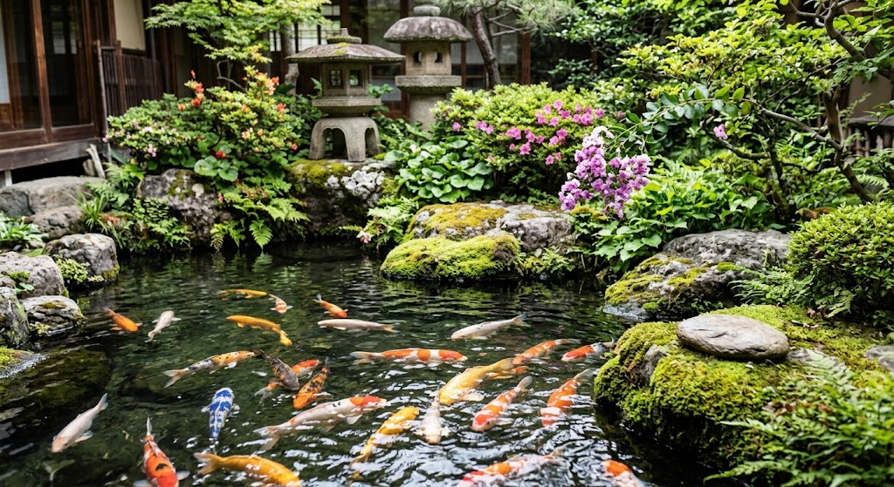
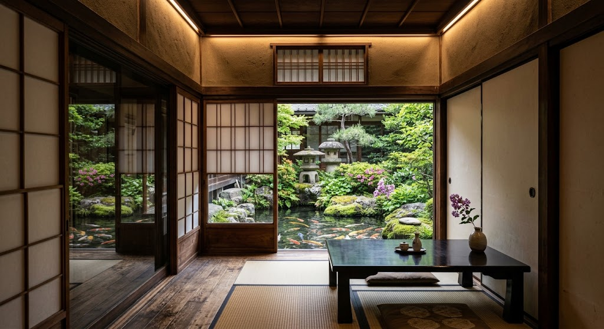
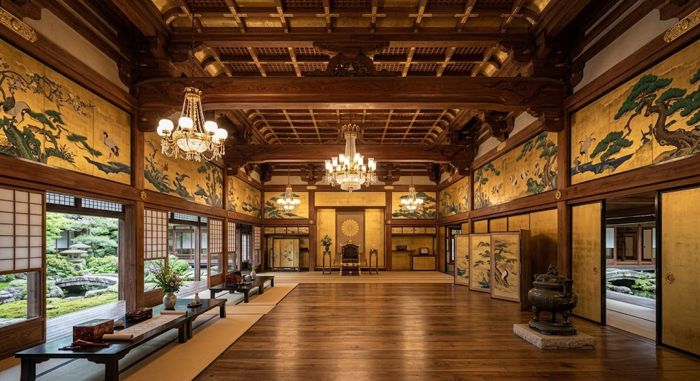
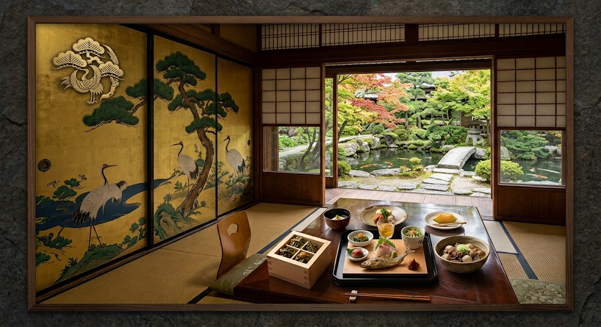
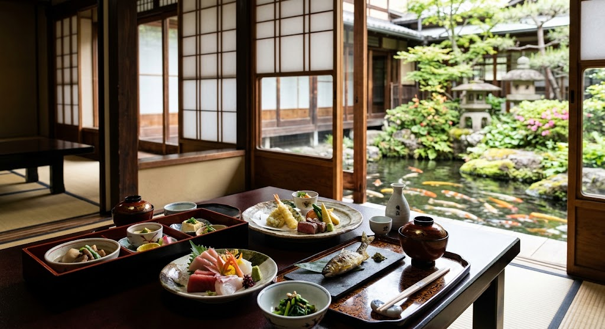

GALLERY
ギャラリー
錦鯉の泳ぐ庭園、歴史ある建築美。
非日常のひとときをご紹介します。





京懐石と山形郷土料理を融合した、亀松閣だけの味。
錦鯉の泳ぐ庭園を望む全室個室で、
歴史ある建築美に包まれる非日常のひととき。
山形市薬師町、明治天皇ゆかりの建物を受け継ぐ老舗料亭。
総席数200席、最大120名の宴会にも対応。
明治天皇ゆかりの建物（行在所）を受け継ぐ創業約120〜130年の老舗料亭。
先代当主の修行先であった京都の懐石料理と、山形の豊富な素材を活かした郷土料理を融合させた
「亀松閣だけの味」を、錦鯉が泳ぐ庭園を望む全室個室で味わえます。
行在所を受け継ぐ歴史的建築。当時の工夫や間取り、襖絵等が残る貴重な空間です。
京都仕込みの懐石と山形の豊富な素材を融合。亀松閣だけの味を提供します。
錦鯉が泳ぐ庭園を眺められる個室。結納・法要・宴会など特別な日に。
先代当主が修行した京都の懐石と、山形の豊かな実り。
二つの味を融合した、亀松閣だけのおもてなし。

先代当主の修行先であった京都の懐石料理と、山形の豊富な素材を活かした郷土料理を融合させた「亀松閣だけの味」を提供しています。京の技と山形の恵み、双方の良さが調和した唯一無二のコースです。
明治天皇ゆかりの建物で、至る所に当時の工夫や間取り、襖絵等が残る歴史的空間の中で食事ができる点が他店にはない強み。全室個室で庭園を眺めながら、結納・七五三・ご法要・忘新年会など特別な日のおもてなしに最適です。
先代当主修行の京懐石と、山形の豊富な素材を活かした郷土料理。亀松閣だけの味。
当時の工夫や間取り、襖絵等が残る建物での食事。他店にはない歴史的価値。
庭園を眺めながらの食事。結納・七五三・法要・忘新年会など特別な日に最適です。
錦鯉の泳ぐ庭園、歴史ある建築美。
非日常のひとときをご紹介します。



山形市薬師町、JR山形駅東口より車で約10分。
無料駐車場完備、結納・法要・宴会など各種ご相談承ります。
クレジットカード（VISA、Master、JCB、AMEX、Diners）がご利用いただけます。電子マネー・QRコード決済の対応状況は、ご予約時にご確認ください。